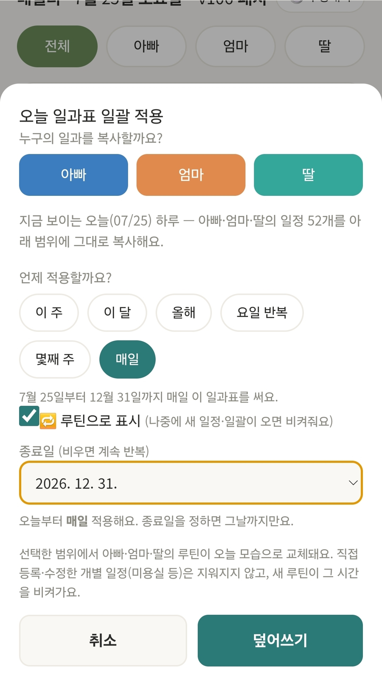
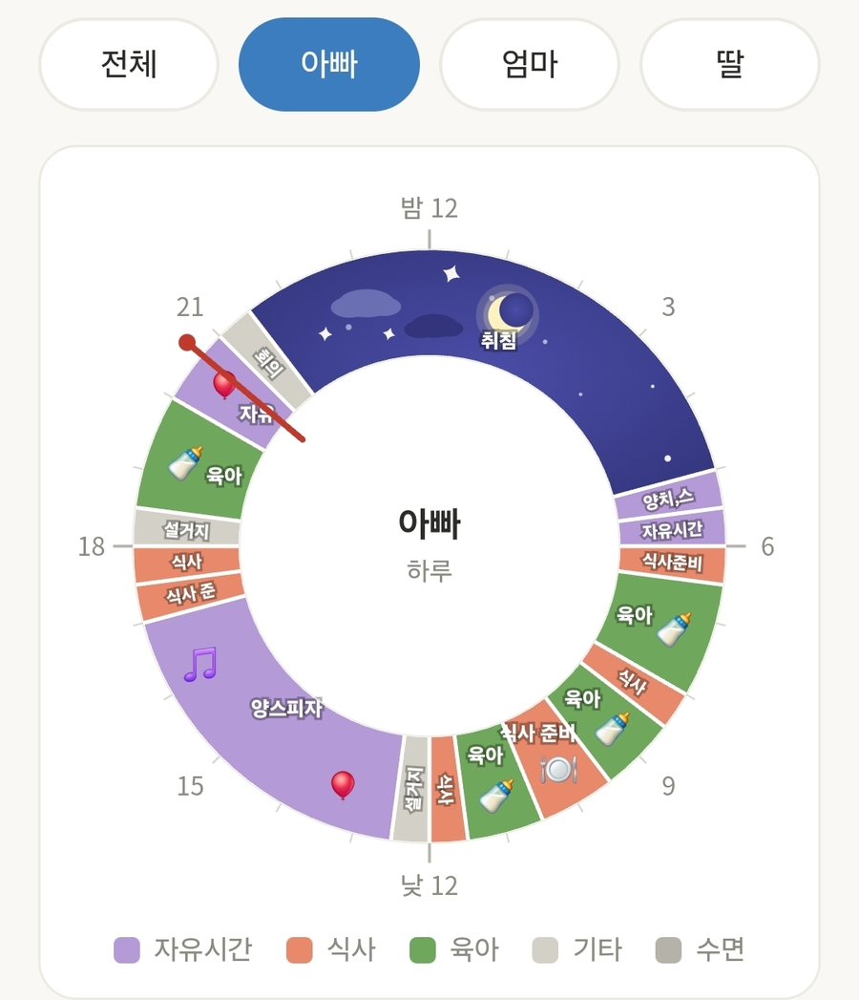
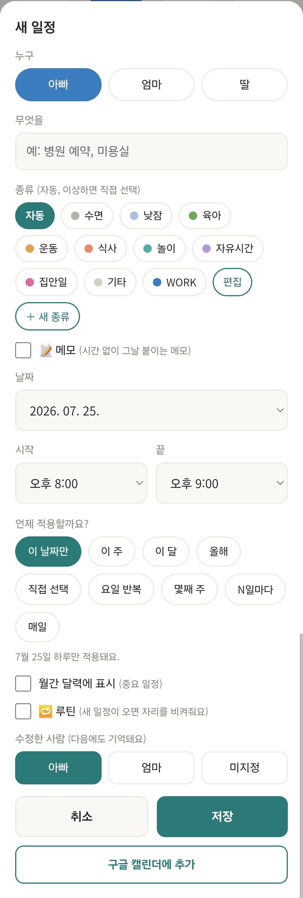
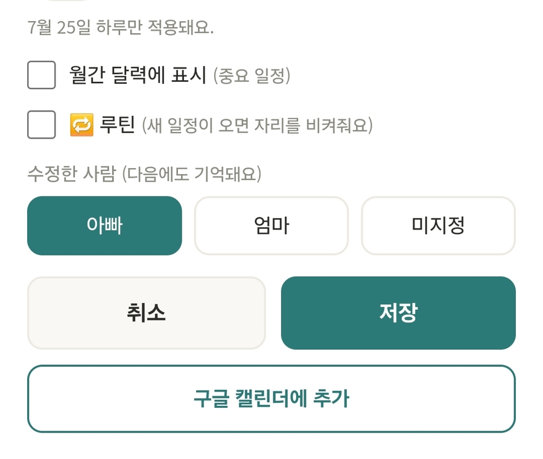
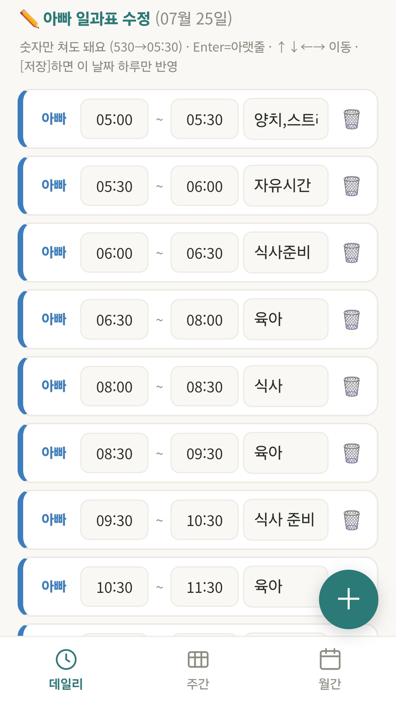
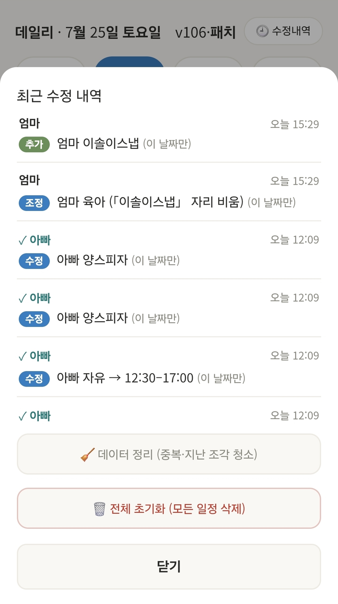

우리 가족의 하루를 함께 설계하다
육아로 빼앗긴 시간, 다시 설계하세요.
하루를 한 번만 짜면, 매일이 저절로 돌아갑니다.
두 사람의 하루가 한 화면에 나란히. 누가 언제 육아 중인지, 내 자유시간은 언제인지 바로 보여요.
설정은 3분, 그다음부터는 자동입니다.
엑셀에 하루 일과를 쭉 적어 붙여넣거나, 앱에서 직접 입력한 뒤 종료일을 설정하여 일괄 적용하면 종료일까지 반복되는 루틴이 생깁니다.

24시간 시계형 차트로 오늘을, 주간·월간 화면으로 이번 주와 이번 달을 봅니다. 전체 보기를 누르면 아빠·엄마·아이의 하루가 나란히 비교돼요.

병원, 1:1 PT, 미용실… 새 일정을 넣으면 루틴이 알아서 자리를 비켜줍니다. 하루만도, 요일 반복·매주·매일·매달 등 반복 설정도 가능해요. 루틴이 아닌 일정과 겹치면 어떤 일정이 잘리는지 목록으로 먼저 물어봅니다.

💡 루틴 표시(🔁)의 의미 — 🔁가 켜진 일정은 "새 일정이 오면 비켜주는 배경"이에요. 소중한 약속에는 🔁를 끄면 함부로 잘리지 않습니다.
중요한 일정은 월간 달력에 표시를 켜면 달력 칸에 배지로 보여요. 구글 캘린더에 추가 버튼으로 스마트폰 기본 캘린더와도 연동됩니다.

✏️ 수정 버튼을 누르면 하루가 표로 변신합니다. 시간 칸에 530만 쳐도 05:30, Enter로 아랫줄, 방향키로 자유 이동. 데일리와 월간 어느 날짜에서든 됩니다.

모든 변경은 수정내역에 기록되고, 본인이 수정한 내역만 ↩️ 한 번에 되돌리기가 됩니다. 반복 일정 삭제나 덮어쓰기처럼 큰 변경은 반드시 확인창이 먼저 물어봐요. 가족의 시간표니까, 데이터가 제일 소중하니까요.

서버 없이, 광고 없이, 우리 가족만.
일정은 브라우저 안에만 저장돼요. 서버로 전송되지 않아 가족의 일과가 밖으로 나가지 않습니다.
설치도, 회원가입도, 결제도 없습니다. 링크를 열면 바로 시작이에요.
홈 화면에 추가하면 앱처럼 쓸 수 있어요. PC 큰 화면에선 엑셀식 수정이 특히 편합니다.
쓰던 엑셀 일과표를 그대로 붙여넣어 시작하고, 언제든 다시 활용할 수 있어요.
거실 태블릿이나 공용 PC처럼 가족이 함께 보는 기기에서 쓰는 걸 추천해요. 각자 폰에서 열면 기기별로 따로 저장되므로, 한 기기를 "가족 시간표 본부"로 정해두는 방식이 가장 편합니다.
일정은 브라우저에 저장되며, 모든 변경은 수정내역(최근 30건)에 기록되어 되돌릴 수 있어요. 단, 브라우저의 "인터넷 사용 기록 삭제"로 사이트 데이터를 지우면 함께 지워지니 주의하세요.
아니요. 오늘 하루만 원하는 모습으로 고친 뒤 일괄 적용을 다시 누르면 그 모습이 새 루틴이 됩니다. 직접 등록한 개별 일정(병원 등)은 그대로 보존돼요.
네. 아빠·엄마·아이 세 사람의 일과를 각각 관리하고, 전체 보기에서 나란히 비교할 수 있어요.